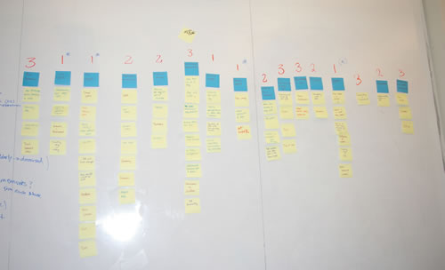

Summary
Summary| Research |
Synthesis |
Design |
Solution |
EyeDog

|
Overview 01
|
|
Interviews 04
|
Research |
Research Methods |
01 Overview
We decided to focus our project on families with pets. The following chart summarizes our research process. We started by exploring the domain online. We then created an affinity diagram to create focus areas for the remained of our research. We then conducted interviews of dog owners, did bricks and mortar research, and then more inerviews. Through out this process we narrowed down and refined our focus.

02 Online Research
We looked at online communities for pet owners. There were a lot of help sites for dog owners about health, training etc., This research helped us identify the focus on dog owners. We felt that dogs care was very involved and that dogs were a lot less independent pets than, for example, cats. We also found a lot of interesting technology for dog owners, such as automatic feeders.
03 Affinity Diagram
After choosing the focus on dogs, we created an affinity diagram of the large amount of information we learned online about owning a dog. We prioritized the affinity diagram to identify further areas to explore. The areas we selected were: Lifecycle, Pet Health, Being Apart from your Pet, Pets as Social "Tools" and Pet Owners.

04 Interviews
We conducted interviews with 12 dog ownes. We wanted to investigate the focus areas from our affinity diagram and our main goal was to find out what makes people feel like good dog owners. We prepared a general list of questions to ask during the interview.
- Why did you get a dog?
- When was the last time you felt proud of yourself as a pet owner? not proud?
- When was the last time you felt like a bad pet owner?
- What have you done to accomodate your pet?
- What kinds of things have you bought for your pet?
- Did you have to change you life style for your pet? fence in back yard? new car?
- Do you have a favorite pet story?
05 Bricks and Mortar
We went to PetCo to contuinue our research. We wanted to see what consumer products were available for dog owners. The following image shows the wide array of products we found.

06 Research Findings
"Pet care activities are an expression of Love"
The biggest finding from our research was that dog owners view their pets as members of the family. They enjoy taking care of their pets and any system that we design cannot replace or take away what pet owners currently do. People feel like good pet owners when they are taking care of their pet. The following are some interesting highlights from our research
- People worry a lot about what their dog is doing when they're away. One of the dog owners that we talked to said she plans her whole day around her dog so that she can not be away from her dog too long.
- People like showing off their dog to their friends and sharing stories about their dogs. One person said, "I feel proud when I take him out for walks and people always say how nice he looks."
- Dogs participate in all family activities, such as dinners and holidays.
- People value and want to remember the funny stories that happened with their dog, and the interactions their dog has with their kids, etc.